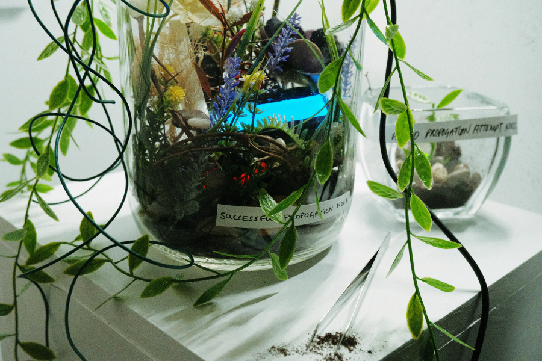
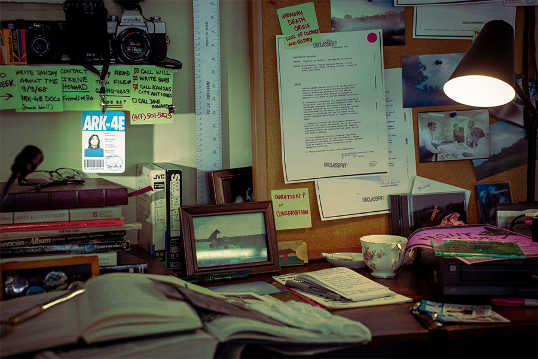
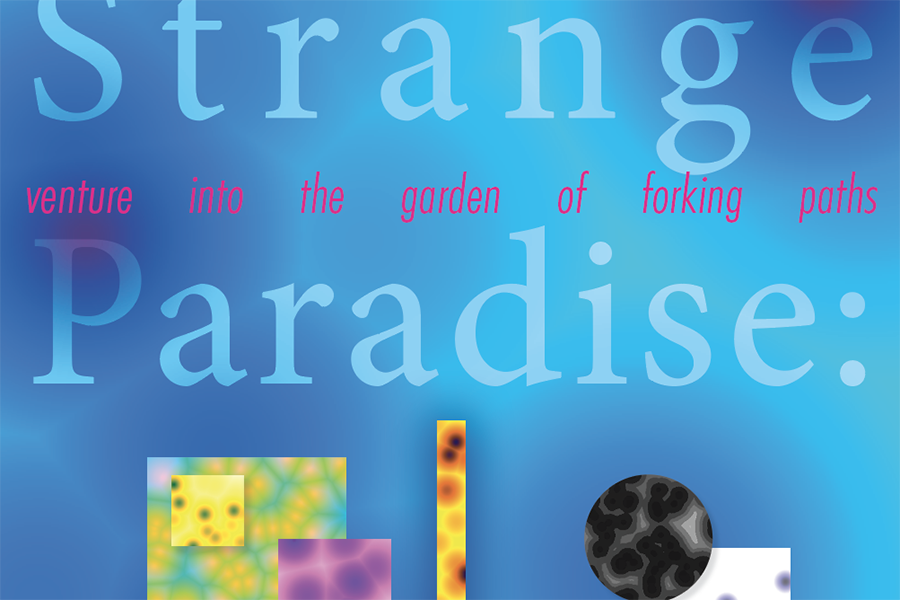

Featured Work

TECHNARIUM
Self-aware terrarium installation that confesses its own failure to bridge the human-nature-machine gap.
View Project →

ARK-4E: An Inquiry into Memory
Installation exploring archives, mnemonic culture, and data loss through speculative storytelling.
View Project →

Strange Paradise
Exploring concepts of infinity in Borges' Garden of Forking Paths via AR and generative code.
View Project →